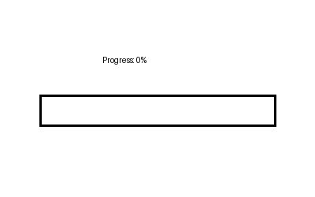

A playful remix of GIF culture and creative coding
A playful exploration of motion, remix, and media culture through animated GIFs.
The Artifact
This project creates a looping animated object that nods to remix culture and the affordances of GIF media.

Media preview
This GIF is a looping visual artifact that shows how digital media can remix form and meaning in a playful way.
Process Notes
I created this GIF using a combination of scripting and design experimentation. The looping motion was generated to emphasize rhythm, repeatability, and the remix aesthetics of animated media.
Tools included Python scripting for animation generation and image export. I experimented with timing, opacity, and visual rhythm until the loop felt both surprising and cohesive.
Reflection
Working in GIF form helped me think about remix as a media practice. The loop becomes part of the meaning: the form repeats, remixes itself, and invites the viewer to return to the same visual space again and again.
Attribution & AI Use
Tools used: Python, GIF export tools, creative design processes.
AI prompts: None used for this piece; the motion and aesthetic decisions were created by hand.
What I changed: I made all design and timing decisions myself and curated the final looping GIF to reflect the remix theme.